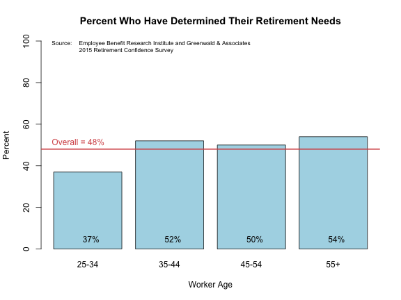

Financial Independence?
- Will you have to work forever?
- When (if ever) can you afford to retire?
- How much will you need to have saved up by then?
- Is retiring early even possible?
Jeff Jetton
Developing Data Products Course
In a recent survey, less than half of American workers 25 years or older reported that they (or their spouse) have ever tried to figure out how much money they will need to have saved up in order to live comfortably in retirement.

Retirement planning can be complicated. The "Crossover Point", first popularized in the book Your Money or Your Life by Vicki Robin and Joe Dominquez, distills the basics down to just a few simple concepts:
As the book puts it:
At the Crossover Point, where monthly investment income crosses above monthly expenses, you will be financially independent in the traditional sense of that term. You will have a safe, steady income for life from a source other than a job.
Sounds pretty good, doesn't it? Wouldn't you like to know when your Crossover Point may be?
Well there's a Shiny App for that! Check it out at http://jeffjetton.shinyapps.io/project
Some links for further information and inspiration: